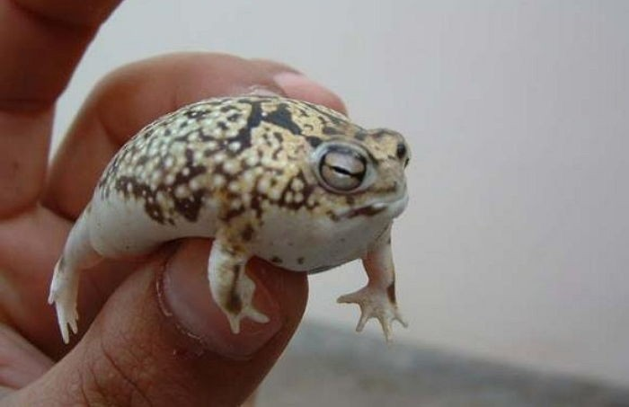

- 오스트레일리아청개구리
- 사막비개구리
- 페도프라이네 아마우엔시스
사막비개구리
사막비개구리(Desert rain frog)는 비개구리과에 속한 개구리이다. 남아프리카 공화국과 나미비아의 해안가 사막에 서식하고 있다. 소형 양서류이며 주 먹이는 다른 동물의 배설물 속에 들어있는 딱정벌레와 같은 애벌레이다. 낮 동안은 바다에서 불어오는 안개를 머금고 축축한 모래 사구 속 10~20cm 깊이에 숨어있다. 밤이 되면 먹을 것을 찾아 언덕 주위를 돌아다닌다.
현재 서식지 파괴 위험에 처해 있으며 국제자연보호연맹(IUCN)은 이 개구리를 ‘취약종’으로 분류하고 있다.
